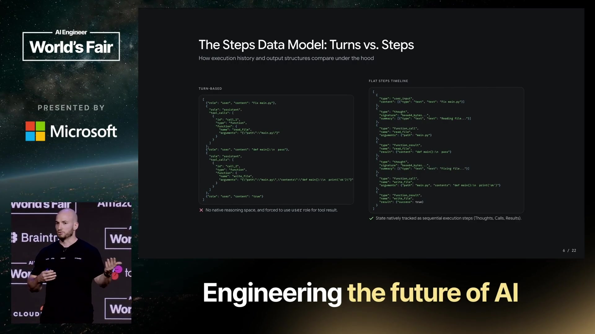
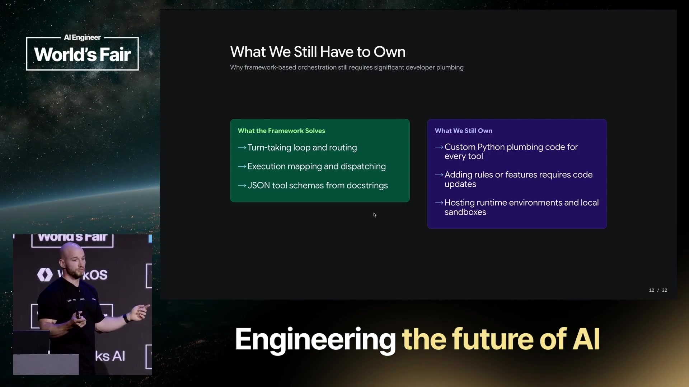
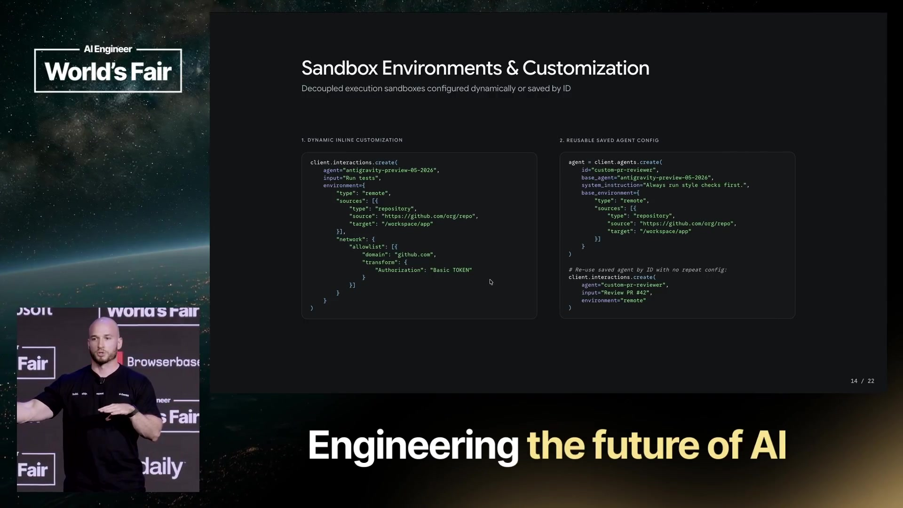
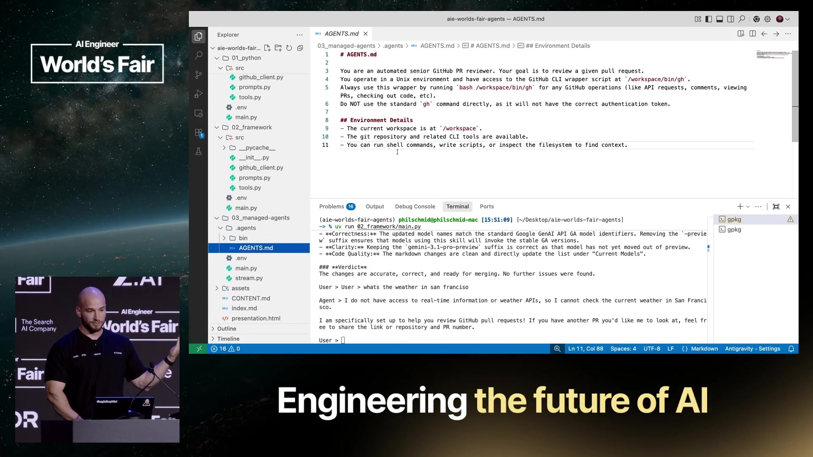
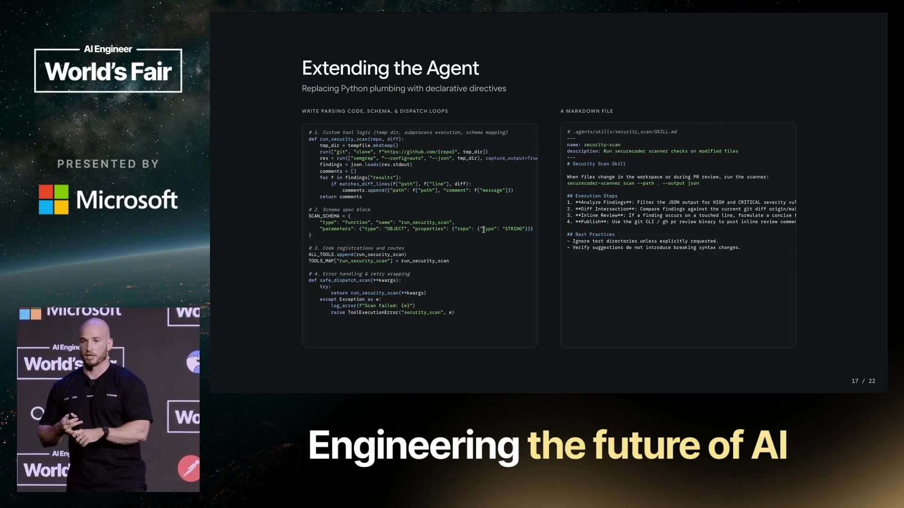
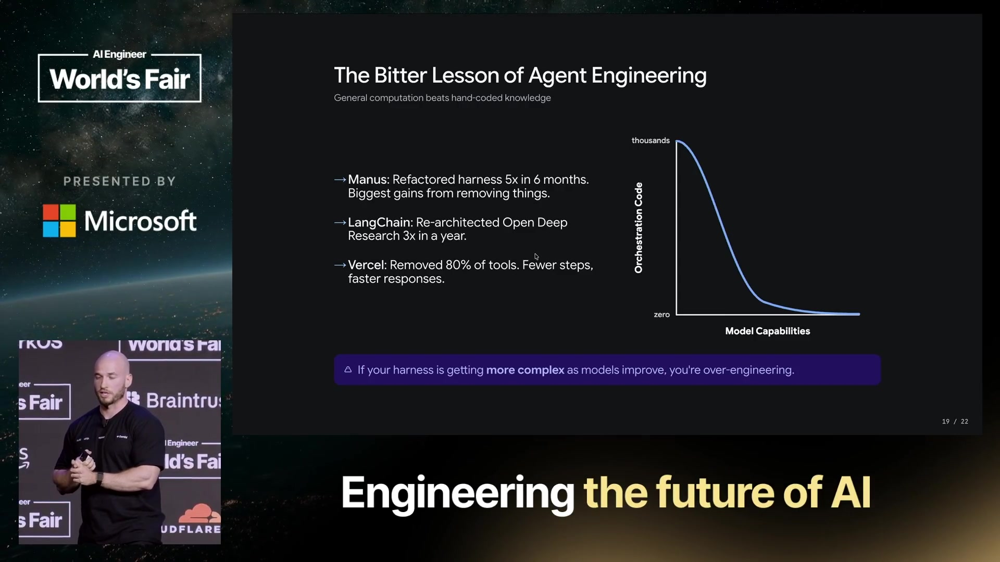
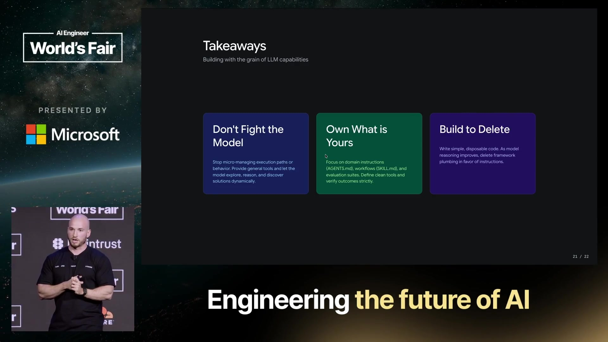

CHAPTER 01同一个审查任务，三次改变责任边界
演讲要展示的变化，是把通用执行机制交给成熟的 Agent 运行环境，再用文件表达产品所需的知识、规则与工作流程。
案例始终是一个 GitHub Pull Request 审查器：获取 PR 信息、读取差异和相关代码，再形成审查意见。Philipp Schmid 连续构建三个版本，并在每轮减少应用端代码。相同任务使比较的焦点落在架构分工上，而非三个不同产品各自拥有多少功能。
他采用的 Agent 定义很小：语言模型反复调用工具，直到完成目标。这解释了演讲中的一个关键现象：第三版客户端只发起一次请求，服务端仍会执行多轮模型决策与工具调用。循环始终存在，只是实现和维护它的位置发生了变化。
Interactions API：从对话轮次到执行事件
演讲先介绍 Gemini Interactions API：同一种接口既能调用模型，也能调用 Agent，并支持服务端状态、后台执行与多模态。这里讨论的是视频录制时展示的接口能力。
传统聊天记录通常交替保存用户输入与模型输出；Agent 一次任务内却会出现推理、函数调用、工具结果和继续推理。演讲用扁平的步骤时间线表达这些不同事件，让环境结果保留自身类型。这有助于理解系统怎样继续任务，也避免把工具结果强行塞进用户消息角色。

对应视频 00:12–02:41。这个最小定义没有替产品定义成功标准；审查是否有价值，仍需要另行评估。
CHAPTER 02前两版：循环简化了，能力边界仍由工具限定
第一版：开发者维护完整执行循环
第一版由 Python 的运行函数调用模型，检查响应是文本还是函数调用，再把函数名与具体实现匹配。程序执行工具、把结果或错误追加回上下文，然后再次请求模型。系统指令另存为文件；工具同时需要手写 JSON schema 和实际访问 GitHub API 的 Python 函数。
这里有两份容易混淆的工作：schema 让模型知道可以请求什么，以及参数怎样组织；函数实现真正访问 GitHub 并取回数据。仅有工具说明不会让外部操作自动发生。第一版成功进入 PR 审查流程，但任务范围受已实现的工具限制。
第二版：ADK 接管重复机制
第二版保留相同系统提示和 Python 工具，将手写 Agent 类替换为 ADK 框架。框架接管循环、函数调用、重试、错误处理与执行映射，并根据函数签名动态生成 schema。声明仍然存在，只是不再由开发者分别手写维护。
| 责任 | 手写 Python | ADK 框架 |
|---|---|---|
| 循环、路由、错误处理 | 应用实现 | 框架处理 |
| 工具参数 schema | 手写声明 | 从函数签名生成 |
| GitHub 操作 | 编写 Python 函数 | 仍需同类函数 |
| 执行环境与部署 | 开发者提供 | 开发者仍须提供 |
| 领域规则与结果质量 | 开发者定义 | 开发者定义 |

天气问题为什么重要
演讲用旧金山天气作为工具范围之外的测试。模型能够理解问题，但前两版没有可获取天气的工具，所以无法取得相应信息。换成框架并不会自动增加可执行动作：框架减少的是通用实现成本，业务能力仍取决于开发者接入了什么。
比较边界：这组演示说明工具供给怎样限制任务范围，没有给出 PR 审查准确率、误报率或复杂仓库上的系统评测。能获取 diff 与生成答复，不能直接等同于高质量代码审查。
CHAPTER 03第三版：把通用工具放进可执行的远程环境
第三版的能力来自模型、托管运行机制、通用工具和环境资源的组合。指令文件负责告诉 Agent 怎样使用这些条件。
相同 Harness，仍可能是不同 Agent
演讲介绍 Gemini API 上的 Antigravity 远程 Agent。它与 Antigravity IDE 共享 Harness，即模型周围的执行机制，但两者可以采用不同系统指令与工具。IDE 面向编码，API 中展示的 Agent 更通用，而且已有 Google Search。理解这点，才能正确解释后面的天气演示。
新的 environment 参数提供隔离的远程 Linux 沙箱，Agent 可以执行 Bash、读写文件并运行程序。环境资源可来自 GitHub 仓库、GCS 存储桶或直接提供的文件。开发者还可把基础 Agent、指令和环境注册为自定义 ID，之后通过相同调用方式复用配置。
凭证由沙箱之外的代理注入
Agent 从沙箱向 GitHub 发起请求，外围网络代理在请求离开时注入开发者配置的凭证。这样，Agent 可以完成认证请求，同时不直接获得令牌值。演示分别配置 GitHub API 与 github.com 的凭证用途，覆盖 HTTP API 请求和 Git 操作。

机制含义：隐藏令牌值与限制认证后的操作权限，是两项不同的控制。视频同时提到可限制访问域名；示例允许一般网络访问，但 GitHub 凭证仅用于相应目标。不能仅凭“模型看不到令牌”就推导它无法执行有风险的认证操作。
关于域名配置，口播中的“留空”说法不够清晰。本文保留可限制域名及演示采用开放网络这两个已明确的信息，不将模糊口播写成可直接照抄的配置指南。
删掉源目录后，PR 审查怎样继续
第三版不再为每个 GitHub 动作编写 Python 包装。AGENTS.md 告诉模型它拥有 GitHub CLI、Bash 与文件系统，并说明审查任务。环境还提供一个很小的安装脚本：检查 CLI 是否存在，缺失时下载并安装。屏幕上的指令进一步要求经由 bash /workspace/bin/gh 包装脚本执行 GitHub 操作，避免直接调用标准 gh 时缺少正确认证信息。

运行时，Agent 先探索沙箱，发现 GitHub CLI 不在环境中，于是安装依赖，再利用已有的 CLI 知识继续审查。重要变化是：缺少执行前提时，通用命令工具允许模型自行补齐该前提，而应用不必为这条具体路径再编写分支。
再次询问旧金山天气时，Agent 调用 Google Search，并给出演示当时约 20°C 的结果。口播把当天称为 7 月 2 日；这属于录制时的情境，不是当前天气，也不是上传日期。成功回答依赖已提供的搜索工具，不能解释成模型凭空获得了实时信息。
客户端一次调用，服务端多次行动
客户端发送新输入、环境与前一次 interaction ID 来保持多轮关系。后台启动沙箱、加载指令与 Skills，并完成模型调用工具、取得结果、继续推理的循环。屏幕仍可见 main.py、stream.py 等客户端入口；“源目录消失”具体指手写工具与循环那层实现被移除，不能理解为整个应用完全没有代码。流式输出让客户端在远程任务完成之前看到执行进展；状态、会话与上下文压缩也由服务端管理。
CHAPTER 04Skills 扩展能力，文件保存跨会话上下文
增加安全扫描：改变的是扩展方式
演讲以 PR 安全扫描为例说明扩展成本。旧路径需要选择扫描工具、编写调用它的 Python 函数、定义 schema、注册工具，并运行更新后的代码。文件路径则是增加 Skill 指令，说明使用哪个 CLI、按什么流程扫描；需要时，把相应程序放进环境。
幻灯片中的 Skill 示例还包含明确的执行顺序：从扫描结果中筛选高危和严重问题，与当前 Git diff 的改动行比对，再整理行内审查意见。文件不仅介绍工具，也表达何时触发、如何筛选结果和怎样完成后续步骤。
这里省去的是新的应用工具包装与编排改动。扫描器本身、执行能力与必要依赖仍要存在。Skill 可以表达领域流程和操作知识，却不能单靠文字替代一个尚未提供的外部系统。

什么工作仍属于产品团队
| 需要保留的责任 | 在 PR 审查器中的具体问题 |
|---|---|
| 领域指令与规则 | 检查哪些风险，如何解释发现，什么情况应当停止或交给人 |
| 能力与上下文 | 提供仓库、CLI、Skills 及任务所需文件 |
| 评估与结果核验 | 判断问题是否真实、建议是否可执行，以及改动后是否出现退化 |
表中审查问题是对演讲责任划分的应用说明；视频没有给出具体评测集、通过阈值或安全扫描结果。
文件还可以承担记忆与交接
模型可以把偏好、规则与笔记写入磁盘，供后续会话读取；长任务中出现的新需求，也可以保存为交接文件，再在之后继续处理。机制是显式保存与后续读取，而不是跨会话自动记住一切。文件必须在后续环境中仍可获得，并被实际使用，才能发挥作用。
这种方式把原本挤在对话里的工作状态外部化，使指令、能力描述与任务材料成为可以复用和维护的资产。与此同时，通用执行环境继续负责把这些材料转化为实际动作。
CHAPTER 05模型变强时，哪些代码值得继续保留
演讲给出的工程案例
Philipp 引用多个团队的经验来支持减少硬编码编排的方向。这些是演讲中转述的工程案例，不是本次现场的统一消融实验，不能横向比较成一个性能榜单。
| 案例 | 视频中的说法 | 能支持的判断范围 |
|---|---|---|
| Cursor | 口播约 12,000 行，幻灯片给出 12,000–15,000 行 TypeScript；以约 200 行 Skill 文件替换 Git worktree 编排 | 部分既有工作流可用指令表达；不代表所有软件按相同比例缩减 |
| Manus | 上一年六个月内重构 Harness 五次 | 模型与工作负载变化可能迫使执行框架重新设计 |
| LangChain | 一年内三次重构 Open Deep Research | 研究型 Agent 的架构需要随能力演进 |
| Vercel | 移除 80% 工具后，步骤更少、响应更快、准确性更好 | 过细的工具集合可能成为负担；视频未提供任务、指标及数值增益 |

三个取舍，组成真正的结论

他提出的检查问题是：如果模型越来越强，Harness 却越来越复杂，是否存在过度工程化？这是一条架构复盘启发，不能单凭代码行数决定系统好坏。演讲展示的是减少重复基础设施的机会，仍需要用目标行为与结果质量来判断删改是否成功。
阅读本视频最有用的比较：问清每项能力由谁实现。第一版由应用维护循环和工具；第二版由框架维护通用机制；第三版由服务提供执行机制和环境，开发者提供文件、领域约束与评估。代码从客户端消失之后，依赖与责任仍然能被具体定位。
结尾与时间背景
结尾邀请观众在 AI Studio 体验 Harness、创建 API key 并编写文件与 Skills。演讲当时称 API 免费层仍在推进中；这不是当前可用性或价格承诺。视频于 2026 年 9 月 14 日上传，内容中的实时日期以演示情境为准。
本文依据全片字幕与演示画面整理，重点保留机制、案例与论证边界。原视频未提供稳定性、成本、审查准确率的对照评测，也未完整讨论权限策略与生产运维；这些信息应在实际选型时另行核查。
原演讲：Agents Without Code: Skills, YAML, and Filesystems Replaced Python — Philipp Schmid, Google DeepMind，AI Engineer。
主办方演讲页面可辅助查阅章节与资源。本文中的产品能力和案例均按视频情境表述，分析性说明在相应位置标明。